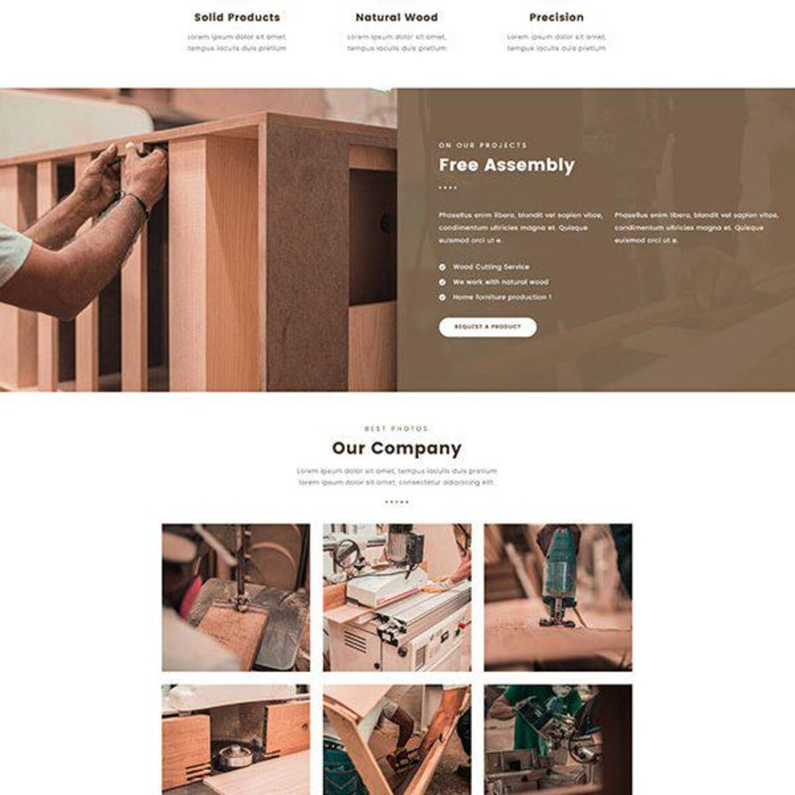
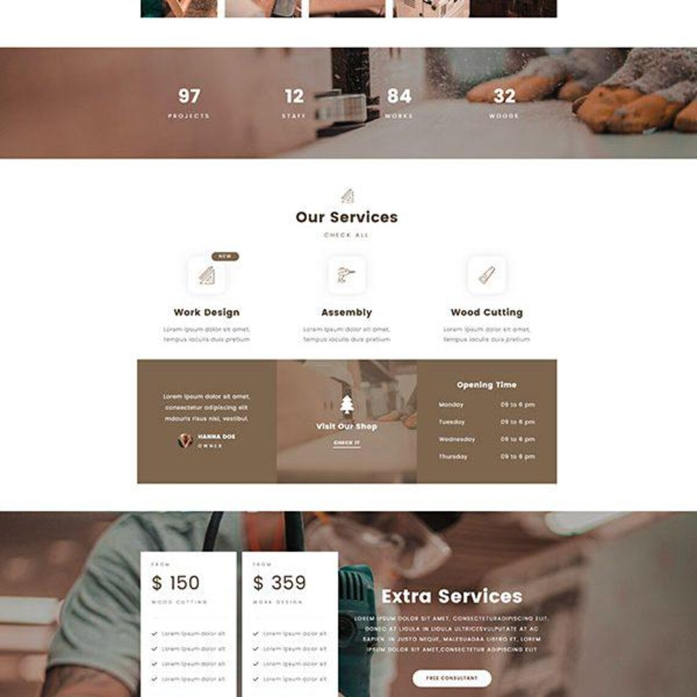
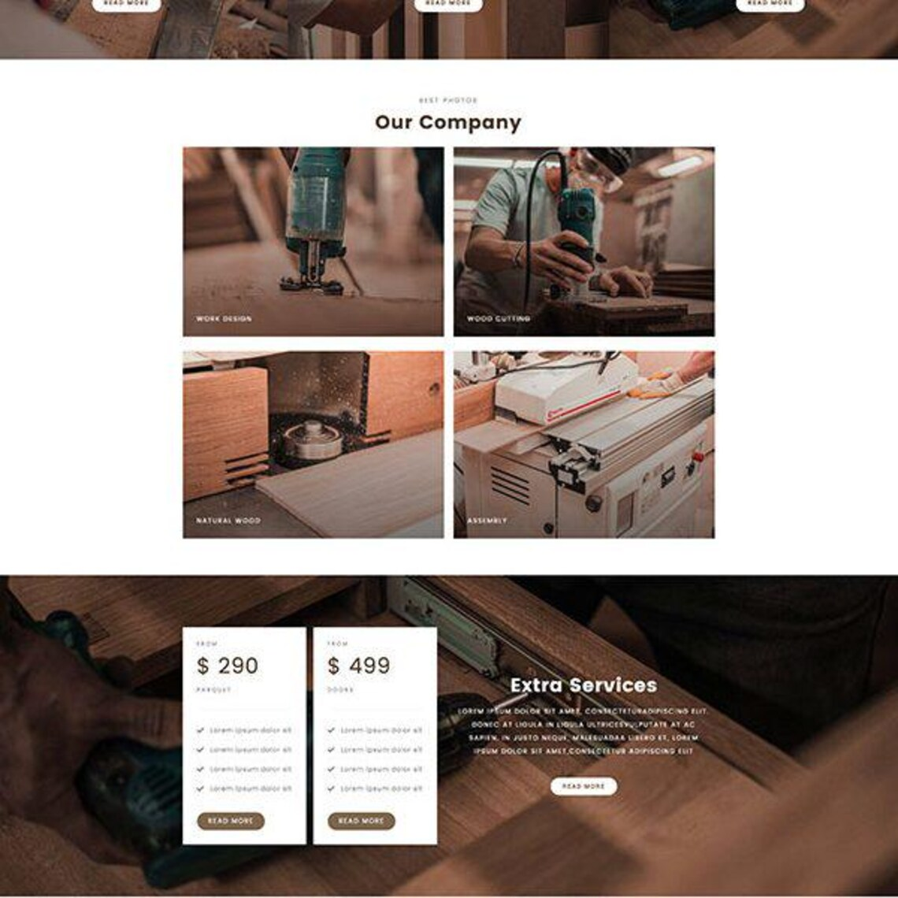
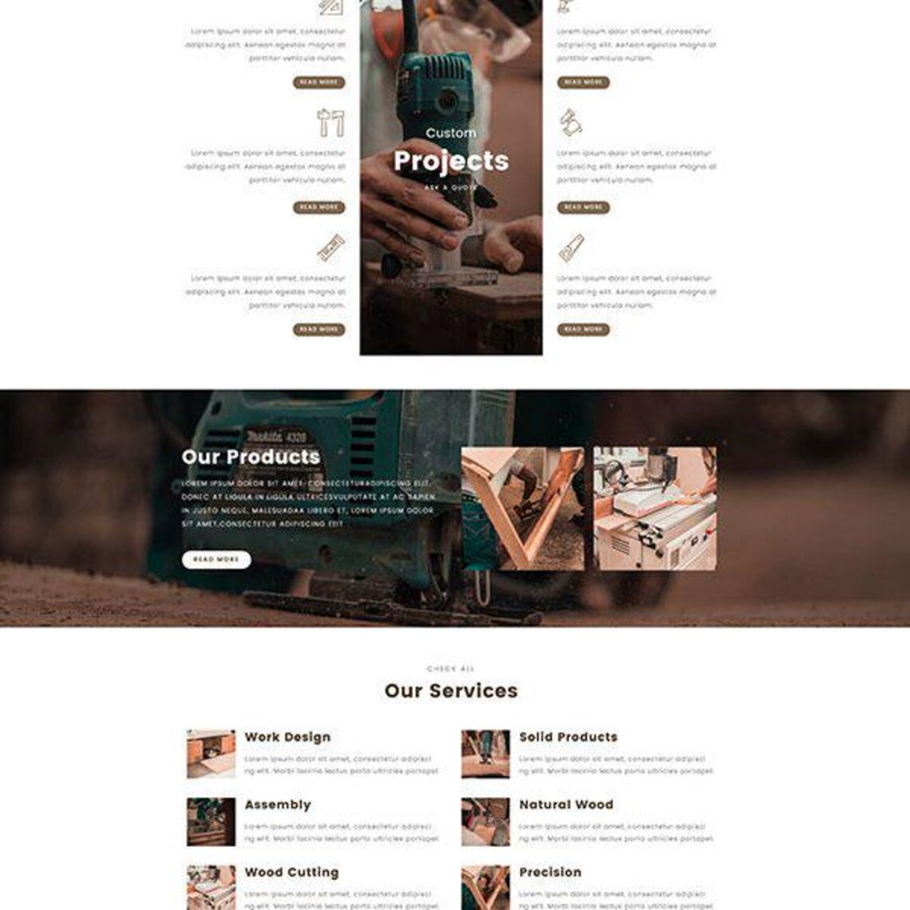
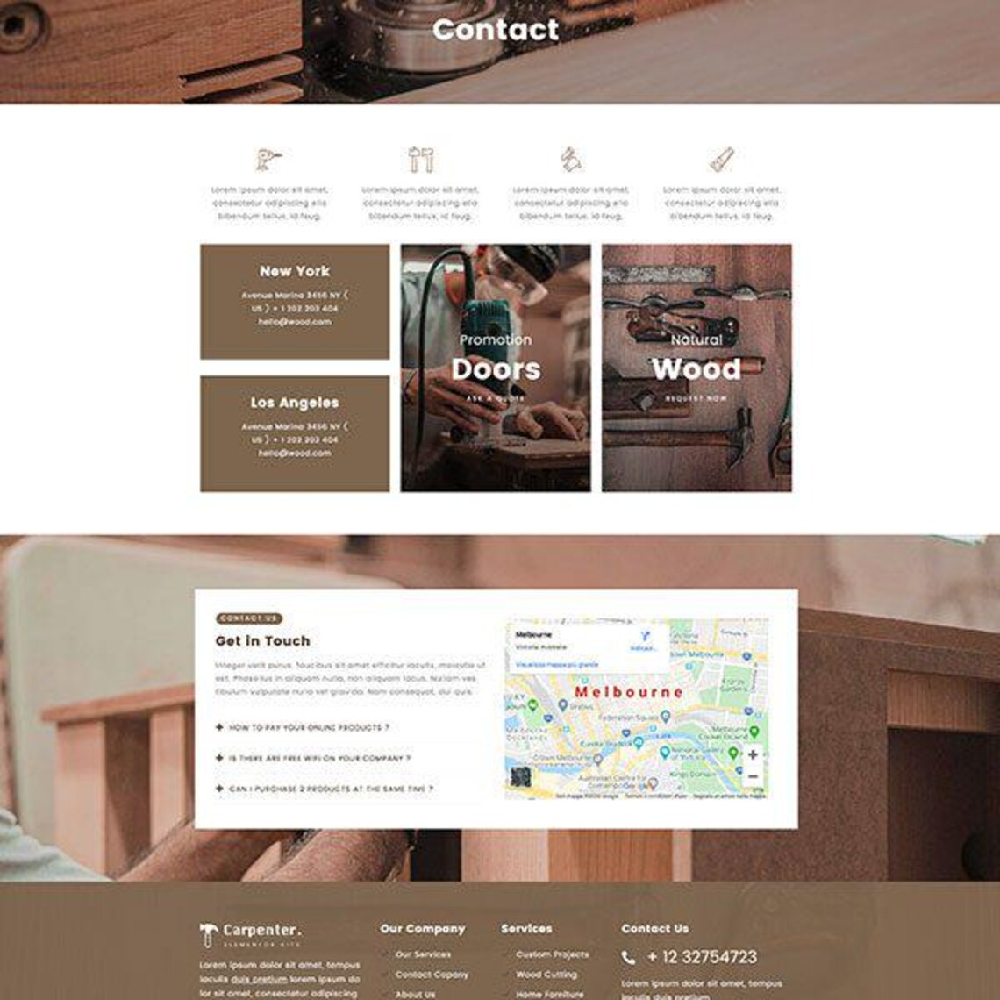
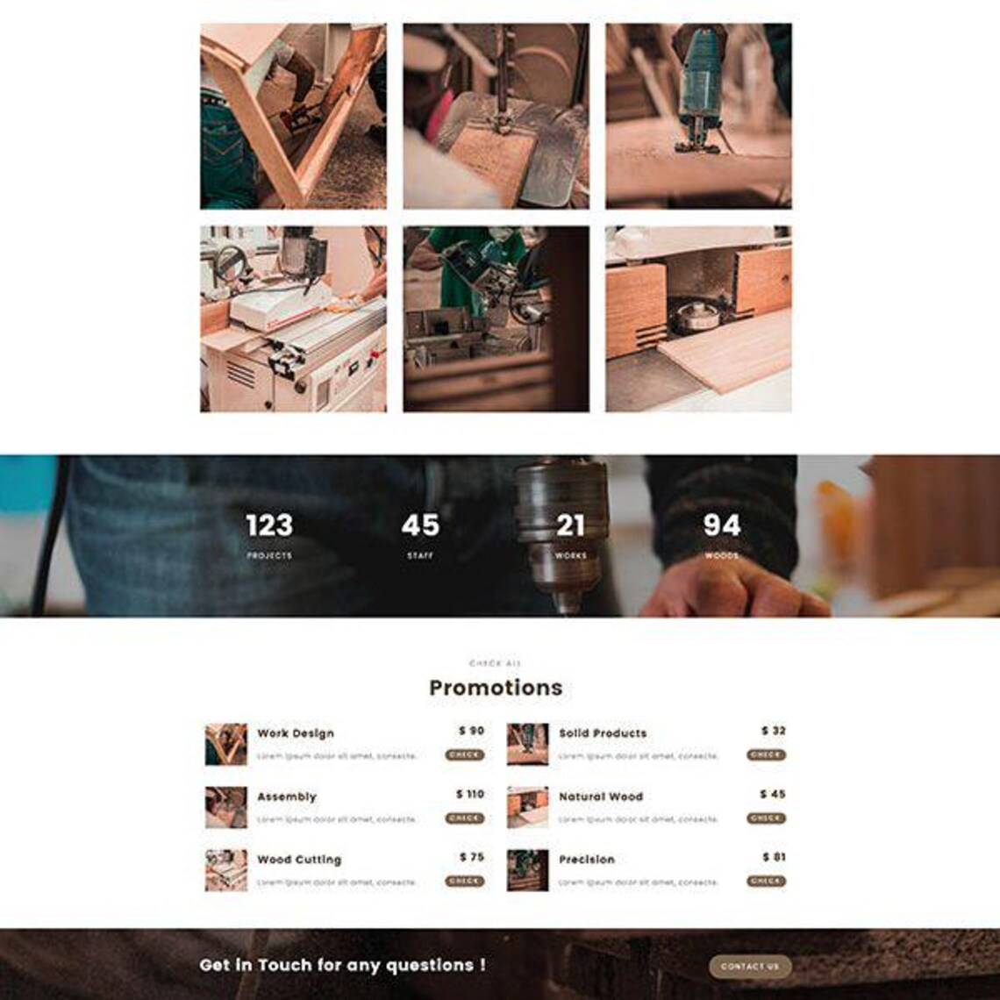
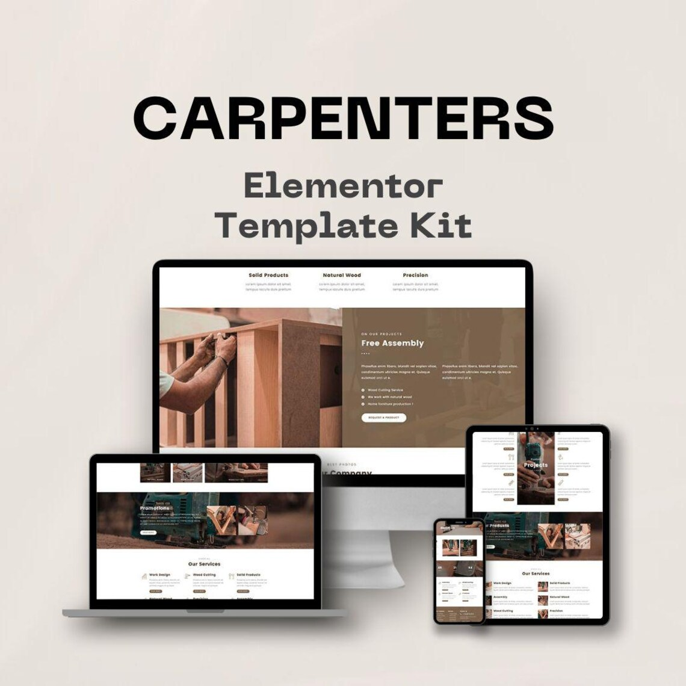
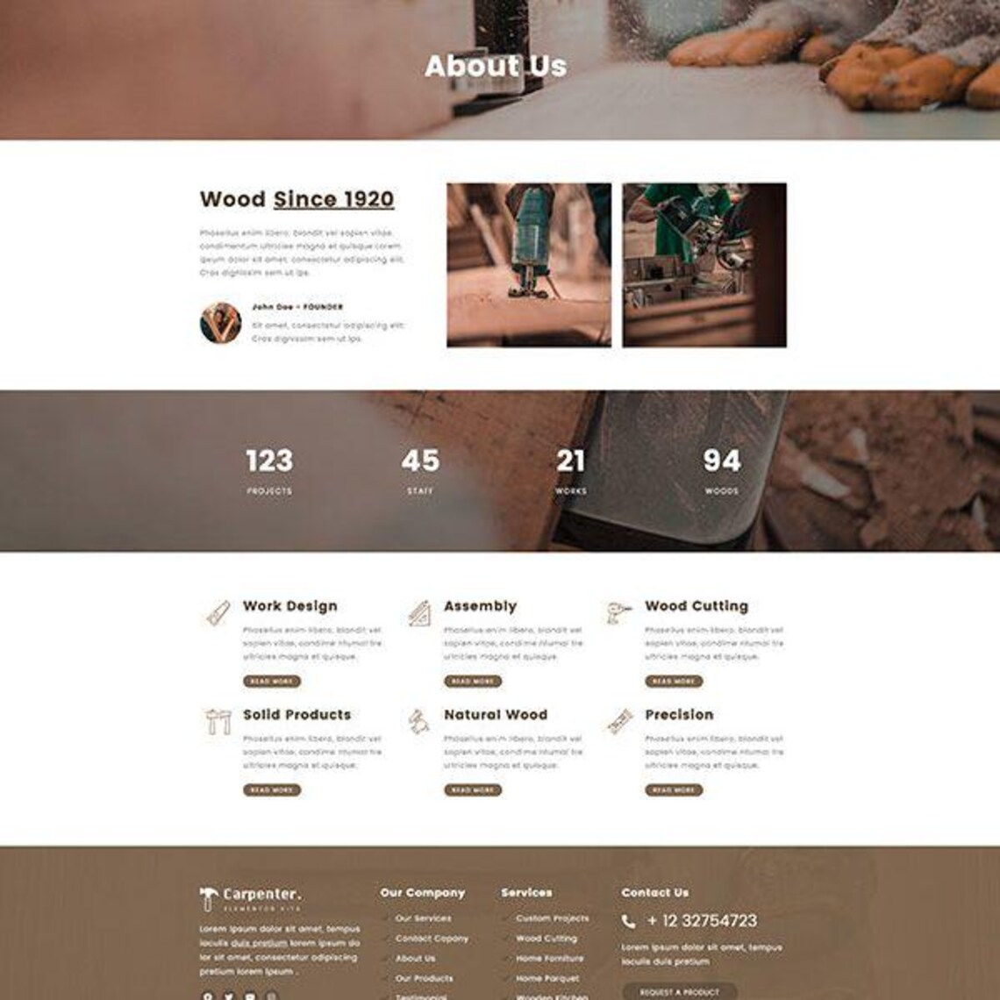
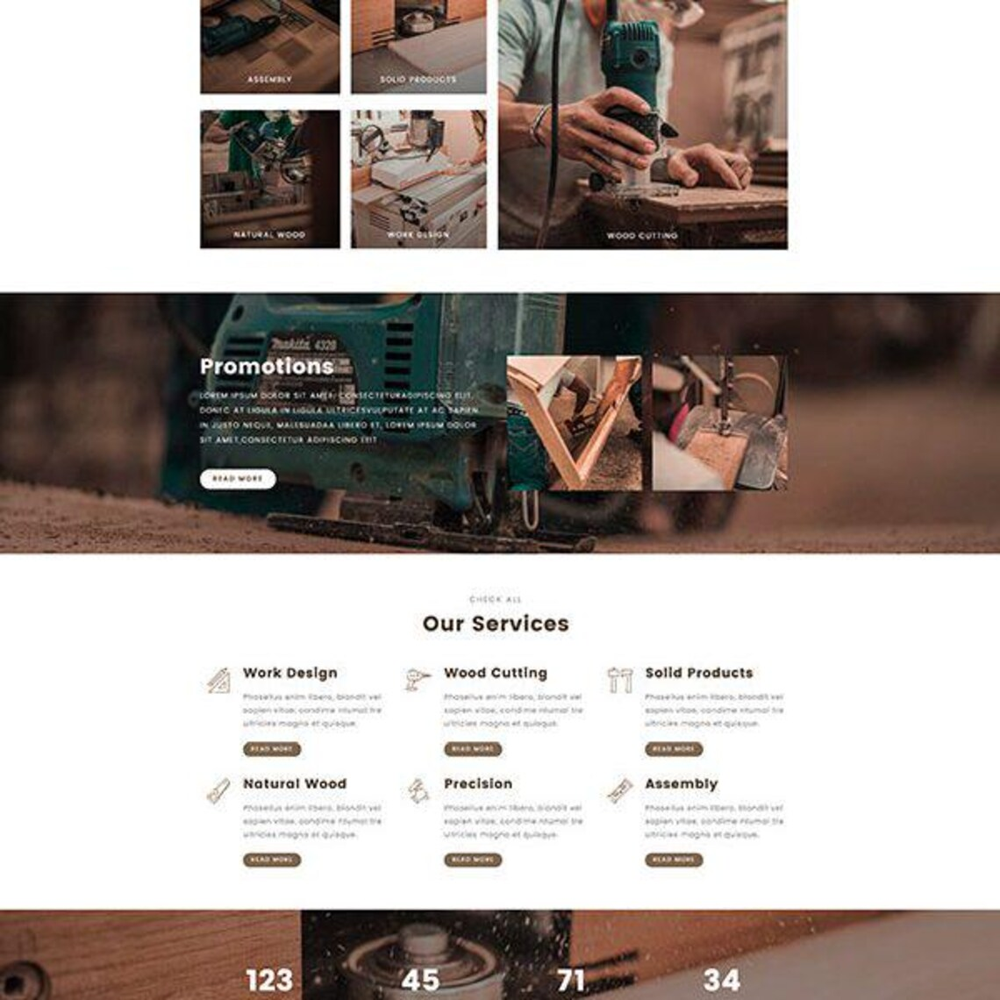

Ebanistería de Autor en el
Gualivá
Creaciones atemporales que trascienden generaciones. Desde mi taller en la Vereda La Candelaria Baja, Sasaima, transformo la madera noble en piezas únicas de mobiliario y arquitectura biodinámica para toda la vida.
¿Por qué un Proyecto de Madera de Alto Valor es una Inversión, no un Gasto?
La verdadera calidad no se deprecia; se convierte en patrimonio. Trabajamos bajo principios de bioconstrucción y ecología consciente, utilizando madera sólida genuina en lugar de derivados industriales.
Madera Maciza y Natural
Seleccionamos maderas nobles de veta continua por su densidad y durabilidad natural, descartando sustitutos sintéticos (MDF, aglomerados o enchapados). Tratamientos orgánicos que aseguran una resistencia duradera al paso del tiempo.
Inversión de Alto Retorno
Cada obra incrementa significativamente el valor intrínseco de su propiedad. Huyendo de la cultura de lo desechable, creamos piezas únicas con carácter y apreciación estética garantizada.
Arquitectura Biodinámica
Estructuras vivas diseñadas en armonía con el entorno geobiológico, optimizando el flujo térmico, el bienestar y la salud, utilizando exclusivamente aglutinantes y aceites naturales ecológicos.
El Arte de Dar Forma a tus Ideas
Desarrollamos soluciones personalizadas adaptadas a la geografía, el uso y las demandas del cliente más exigente.

Mobiliario de Autor a Medida
Creamos mesas de comedor monumentales, bibliotecas empotradas, barras de cocina y mobiliario exterior premium. Diseñados con ensambles artesanales tradicionales, sin tornillería visible, logrando piezas robustas con acabados sedosos mediante ceras orgánicas y aceites naturales.
- Madera sólida seleccionada de veta continua.
- Diseños a juego con el interiorismo moderno o rústico.
- Acabados libres de toxinas y compuestos químicos.

Estructuras y Casas Biodinámicas
Planificación e ingeniería en madera para edificaciones ecológicas y de bajo impacto ambiental. Diseñamos estructuras que respiran, optimizando el confort acústico y térmico de forma pasiva, respetando la geobiología local para crear espacios saludables y de gran aliento.
- Estructuras autosoportadas y entramados de madera pesada.
- Aislamientos de fibras naturales biocompatibles.
- Cero huella de carbono y máxima eficiencia energética.

Obras y Adecuaciones para Fincas
Diseñamos e instalamos pérgolas monumentales, establos premium, cubiertas, terrazas voladas y portones rústicos reforzados de alta gama. Proyectos pensados para fundirse con el paisaje campestre y resistir condiciones climáticas extremas con gracia.
- Madera tratada biológicamente contra la intemperie.
- Herrajes forjados a mano de alta resistencia estructural.
- Diseños majestuosos que embellecen el paisaje exterior.

Restauración de Muebles Antiguos
Devolvemos la vida a piezas con historia familiar. Aplicamos técnicas tradicionales de ebanistería para restaurar la solidez estructural y devolver el esplendor natural a sus muebles, respetando su valor patrimonial y originalidad.
- Rescate de acabados originales mediante ceras orgánicas.
- Refuerzo estructural con ensambles de época.
- Tratamiento especializado para madera noble antigua.
El Equilibrio entre el Alma y la Precisión
Nuestra maestría se sustenta en la perfecta armonía entre las técnicas ancestrales y la tecnología moderna. Disponemos de un equipamiento especializado de primer nivel para abordar proyectos de cualquier complejidad con acabados impecables.
Power Tools (Precisión Milimétrica)
Utilizamos herramientas eléctricas de última generación (sierras de banco calibradas por láser, ruteadoras de alta potencia, cepilladoras de espesor industriales) para lograr cortes estructurales impecables, ensambles de ajuste perfecto y una solidez mecánica insuperable.
Hand Tools (El Alma del Artesano)
El carácter final de cada obra se esculpe a mano. Empleamos formones de aleación japonesa, cepillos manuales de bronce, gubias tradicionales y técnicas de ebanistería clásica para refinar las texturas, pulir los cantos y dar vida a la madera respetando su veta original.

Nuestras Creaciones
Una muestra de proyectos realizados que expresan la solidez, el diseño y la versatilidad de la madera noble.




Postulación de Proyecto Personalizado
Debido al nivel de detalle artesanal y a nuestro compromiso de utilizar exclusivamente maderas macizas 100% naturales, tomamos un número limitado de proyectos por año. Cuéntanos sobre tu visión para calificar la viabilidad técnica y de diseño en nuestro taller.